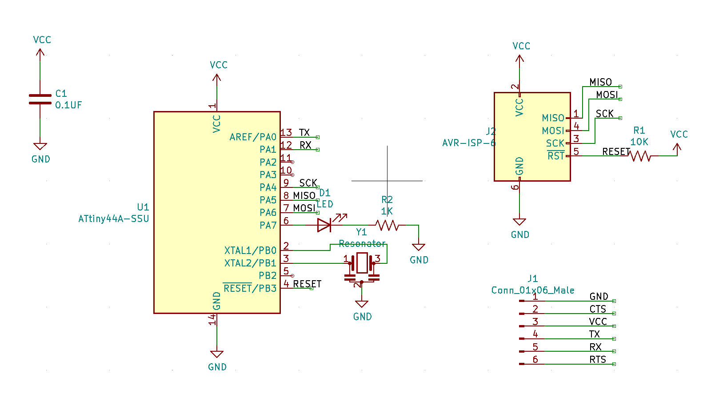
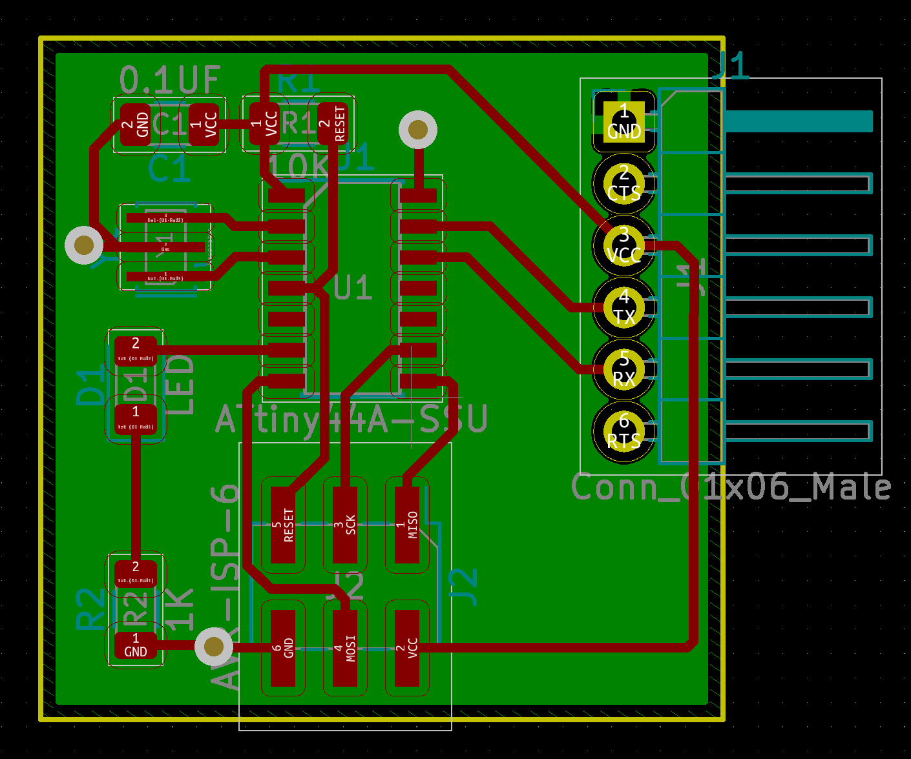

communication
making!
circuit design & fabrication
Time to talk to the ATtiny44! Very exciting. My final project idea involves setting stepper motor positions based on input to the computer, so this homework assignment will hopefully be a small step towards that. For ease, I start with just turning on & off an LED:

Everything is similar to prior week boards, with the addition of a 20 Mhz crystal for use as an external clock, which will help speed of communication rather than the tiny44's internal 8MHz. Nadya provided the board design since it was an abbreviated week from Thanksgiving break, so my humble addition is an LED + resistor :)
The PCB makes a small but mighty change from prior weeks: it's double sided! The bottom is just a ground pour, with vias to connect the top to bottom. Ground often acts as a moat, blocking traces from getting where they need to go, so this is Very Exciting Stuff to me.

The only soldering hiccups were with (1) the resonator, which have very thin copper pads which I was a bit sloppy with, and (2) the headers, which I mindlessly soldered the wrong way round; the long end should poke poke out the bottom so that the serial cable can securely lock in. It still works, but I have to push down on the cable to make sure it stays secure. Definitely a no-no for the final project. For the vias, I stripped a bit of wire, straightened it by twisting with tweezers, and soldered to the top and bottom.

firmware
I tried firmware in 2 flavors- the .c example firmware from Nadya, and one using Arduino's Software Serial library. Here is Nadya's example firmware echoing back messages; when the buffer is full, the LED connected to Pin7 turns on:The example code is quite lengthy, and I found from some Googling that we can make use of the existing Software Serial library to make the firmware significantly shorter, especially for this simple example:
reflections
I've been messing around with serial communication for some time to control 3D printers/Jubilee/etc, and it's cool to get a closer look at what's going on here by zooming in. It definitely makes me thankful for existing libraries like PySerial that makes sending and recieving messages super easy.I haven't yet tested reliability of communication much- anecdotallt, I see some messages printed back twice on the same line every so often. Will have to think about how to handle this for my final project, so that behaviour is predictable.